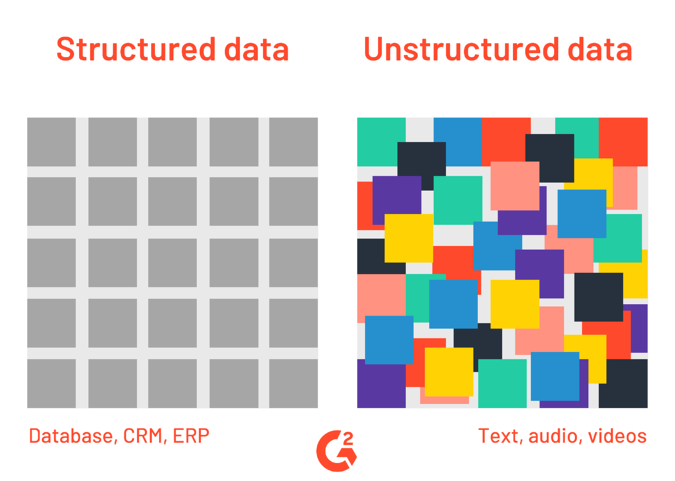
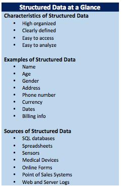
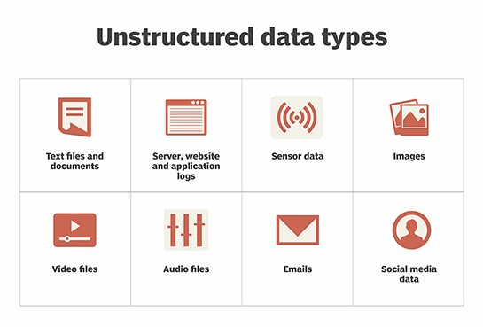
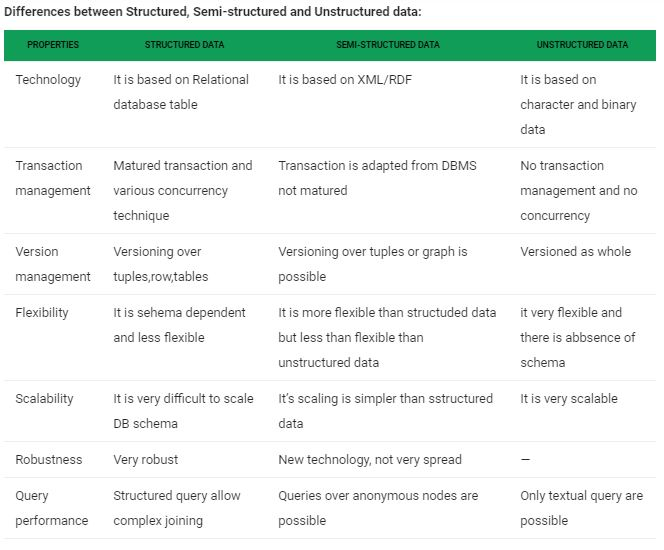

Types Of Big Data
Links:

1-Structured data:

is data that adheres to a pre-defined data model and is therefore straightforward to analyse. Structured data conforms to a tabular format with relationship between the different rows and columns. Common examples of structured data are Excel files or SQL databases. Each of these have structured rows and columns that can be sorted.
Structured data depends on the existence of a data model – a model of how data can be stored, processed and accessed. Because of a data model, each field is discrete and can be accesses separately or jointly along with data from other fields. This makes structured data extremely powerful: it is possible to quickly aggregate data from various locations in the database.
Structured data is is considered the most ‘traditional’ form of data storage, since the earliest versions of database management systems (DBMS) were able to store, process and access structured data.
2-Unstructured data:

is information that either does not have a predefined data model or is not organised in a pre-defined manner. Unstructured information is typically text-heavy, but may contain data such as dates, numbers, and facts as well. This results in irregularities and ambiguities that make it difficult to understand using traditional programs as compared to data stored in structured databases. Common examples of unstructured data include audio, video files or No-SQL databases.
The ability to store and process unstructured data has greatly grown in recent years, with many new technologies and tools coming to the market that are able to store specialised types of unstructured data. MongoDB, for example, is optimised to store documents. Apache Giraph, as an opposite example, is optimised for storing relationships between nodes.
The ability to analyse unstructured data is especially relevant in the context of Big Data, since a large part of data in organisations is unstructured. Think about pictures, videos or PDF documents. The ability to extract value from unstructured data is one of main drivers behind the quick growth of Big Data.
3-Semi structured data:
is one of the types of big data and By structured data, we mean data that can be processed, stored, and retrieved in a fixed format. It refers to highly organized information that can be readily and seamlessly stored and accessed from a database by simple search engine algorithms. For instance, the employee table in a company database will be structured as the employee details, their job positions their salaries will be present in an organized manner.
-Semi Structured Data Examples
- Email
- CSV, XML and JSON documents
- NoSQL databases
- HTML
- Electronic data interchange (EDI)
- RDF
